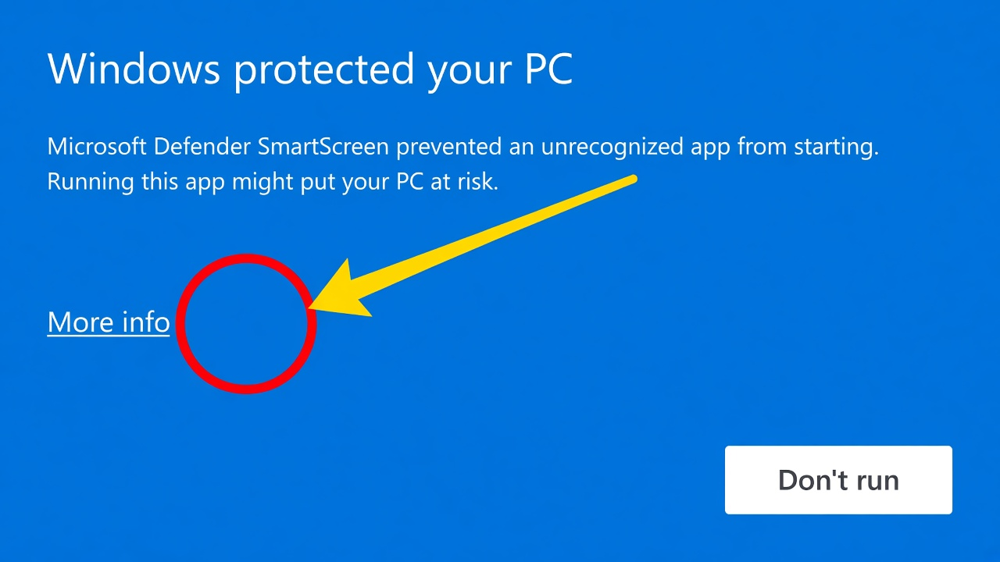
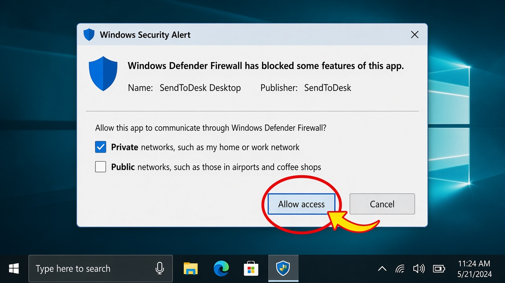

Install SendToDesk Desktop
1 Open the SendToDesk .exe
Double-click the SendToDesk .exe in this folder. That one file is the installer. It works on its own.

After setup, open SendToDesk from the Start menu or the desktop shortcut.
2 If you see “Windows protected your PC”
This is normal. Click the small More info link first. Do not click Don’t run.

Then click Run anyway.

This warning appears because the app is new. Use it only if this zip came from the official SendToDesk website.
3 Allow the firewall
The first time the app opens, Windows may show a firewall alert. Click Cancel and your phone cannot find this PC.

Leave Public networks unticked.
4 Pair your phone
Keep this app open. Use the same Wi‑Fi on phone and PC. In the Android app, connect with Nearby, QR, or the 6-digit code.
If you clicked Cancel by mistake
Windows Security → Firewall & network protection → Allow an app through firewall → SendToDesk → tick Private → OK.